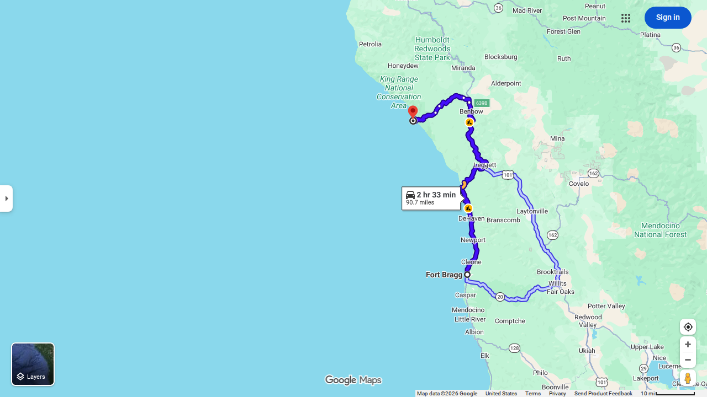
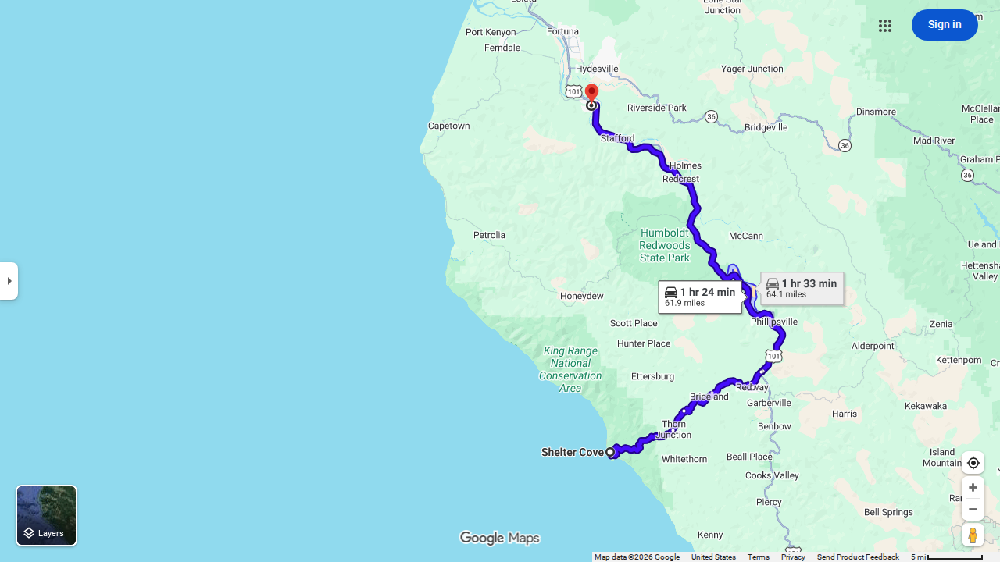
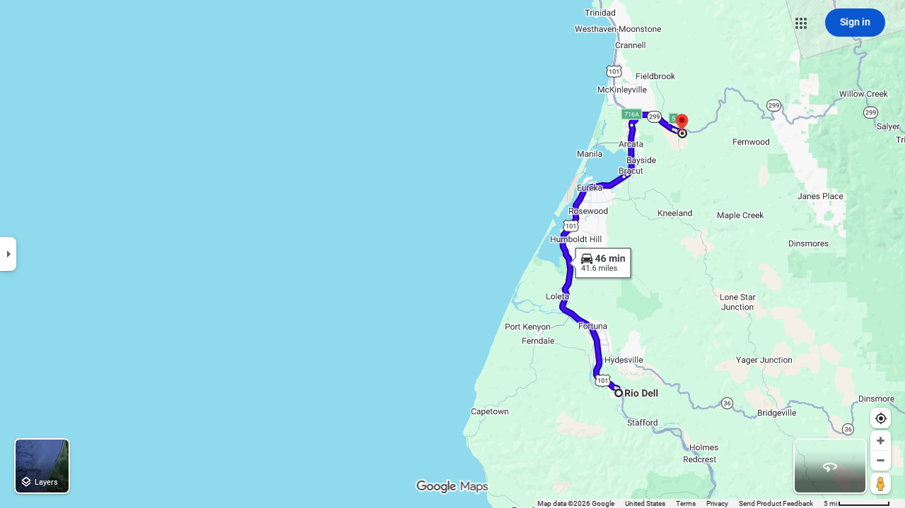
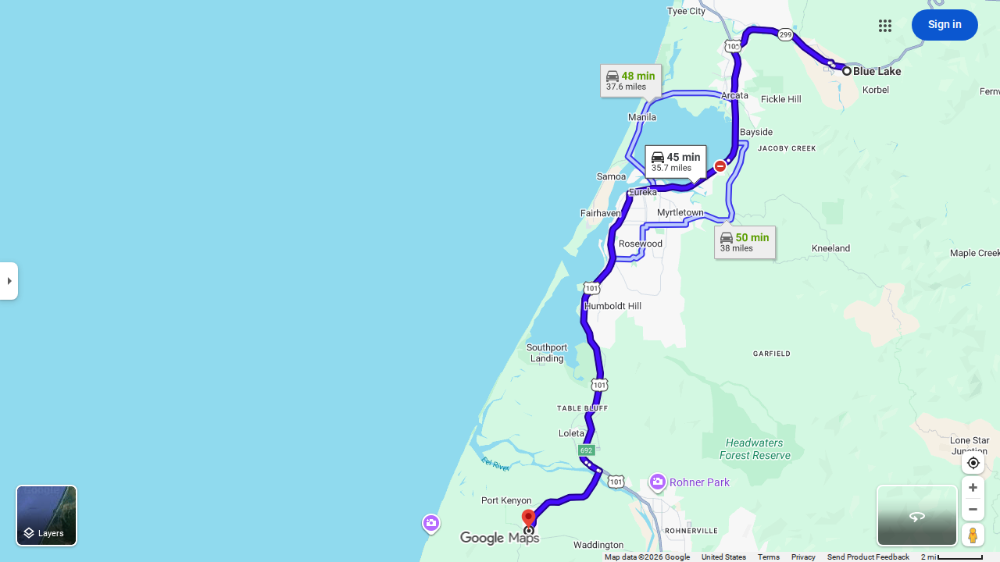
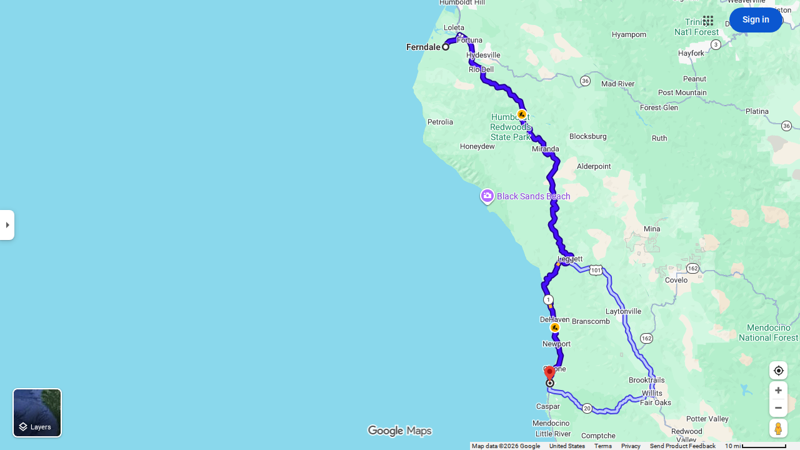

Sean Wagstaff · A MotoMap Guide
Fort Bragg CA → Shelter Cove CA

The opening leg of the Lost Coast BDR-X departs Fort Bragg heading north through the King Range wilderness. The route climbs into the coastal mountains on primitive roads before dropping to the remote black sand beaches near Shelter Cove — one of the most isolated communities on the California coast.
⛽ Fuel: Fort Bragg CA · Shelter Cove CA
⚠️ Hazards: Usal Road (Section 1): seasonal closure — check ridebdr.com/news/lost-coast-route-updates/ before riding · Remote terrain, limited cell service
Shelter Cove CA → Rio Dell CA

From Shelter Cove the route pushes north through the heart of the King Range National Conservation Area. The road winds through old-growth redwood canyons, past the Mattole River estuary, and through the remote Petrolia valley before reaching the Eel River corridor at Rio Dell.
⛽ Fuel: Petrolia CA · Honeydew CA · Rio Dell CA
⚠️ Hazards: Seasonal bridge on route (open June 15 – Oct 31 only) · Saddle Mountain alternate available
Rio Dell CA → Blue Lake CA

A shorter transitional leg connecting the Eel River lowlands to the redwood forests above Blue Lake. The route climbs through Grizzly Creek Redwoods State Park and the Van Duzen River corridor, passing through some of the most dramatic old-growth stands on the coast.
⛽ Fuel: Rio Dell CA · Blue Lake CA
⚠️ Hazards: Narrow forest roads · Logging truck traffic possible
Blue Lake CA → Ferndale CA

The longest northern leg sweeps through Hoopa, Trinidad, and the wild north Humboldt coast before turning south toward the Victorian village of Ferndale on the edge of the Eel River delta. Highlights include Gold Bluffs Beach, Big Lagoon, and the dramatic headlands around Cape Mendocino.
⛽ Fuel: Hoopa CA · Trinidad CA · McKinleyville CA · Ferndale CA
⚠️ Hazards: Gold Bluffs Beach: 4WD/high clearance recommended · Table Bluff extension: soft sand
Ferndale CA → Fort Bragg CA

The closing leg is the longest and most remote — a sweeping arc south through the Lost Coast's southern ranges, descending through the Sinkyone Wilderness and the Avenue of the Giants before climbing back to the Mendocino Coast and returning to Fort Bragg where the loop began.
⛽ Fuel: Garberville CA · Leggett CA · Laytonville CA · Westport CA · Fort Bragg CA
⚠️ Hazards: Sinkyone Wilderness: very primitive roads · Westport-Union CG area: loose gravel · Drive-Thru Tree: tourist traffic
Share a Google Maps, Waze or Garmin map link — or upload a GPX or KML file.
The description is important. Tell me what it is and when it's happening. I will add it to the planning guide automatically.
You should see the results in a few minutes.
📎 Open Telegram to share a map Paste a link or send a file — include a description